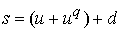
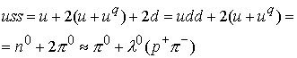
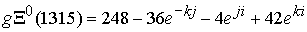
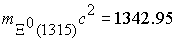
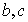

|
В. И. ЕЛИСЕЕВ ВВЕДЕНИЕ В МЕТОДЫ ТЕОРИИ
ФУНКЦИЙ ПРОСТРАНСТВЕННОГО КОМПЛЕКСНОГО ПЕРЕМЕННОГО |
|
Продолжение 3 из 3. 8.9. Вычисление масс микрочастиц по кварковым композициям и модам распада. Вычисление квантовых чисел микрочастиц, исследование связи спина, изоспина, четности с величиной массы микрочастицы. Реализация квантовой СРТ-теоремы. Исследование закона не сохранения четности.
Это выражение дает массу гиперона равную
Мэв. Расхождение с экспериментальной массой составляет 13,4 %.Если оставить только корректировку кварка
Расхождение составляет 5,5 %.
Откорректируем дополнительно глюонное гиреолна по весовому коэффициенту электрической составляющей
. Это дает массу гиперона Мэв. Экспериментальная масса равна 1115,6 Мэв. Расхождение составляет 1,34 %.Кварковая композиция
Для первой микрочастицы подходит глюонное поле с кварками
, которое дает суммарное глюонное поле , это дает массуМэв. Расхождение составляет 4,82 %.
Для вычисления массы второй микрочастицы проведем дополнительно поворот глюонного поля во втором кварке  и получим , суммарное глюонное поле будеи иметь вид
и получим , суммарное глюонное поле будеи иметь вид
. Это дает массу
Мэв. Расхождение составляет 4 %.
На рис 86, 84, 84 представлены диаграммы составляющих суммарное глюонное поле электрического и лептонного поля соответственно . Эти диаграммы назовем спин-изотопическими, та как они раскрывают зависимость квантовых чисел микрочастиц от электрического и лептонного поля частицы. Спин частицы определяется наличием лептонной составляющей глюонного поля, причем величина спина для кварковой композиции барионов из трех кварков определяется поворотом этой составляющей в каждом кварке: при одном и двух поворотов  . Если поворот происходит в каждом из трех кварков, спин равен
. Если поворот происходит в каждом из трех кварков, спин равен  . Таким образом,
. Таким образом,
имеет , имеет спин  , имет . Становится очевидным отсутствие .
, имет . Становится очевидным отсутствие .
Изоспин микрочастиц определяется взаимным расположением электрического и глюонного поля. Согласно диаграмме для
диаграммы дают . Положительная четность для барионов определяется наличием в суммарном глюонном поле обоих составляющих.
Кварковая композиция отвечает двум микрочастицам с разными массами и квантовыми числами: , для первой имеем спин четность и изоспин
 и второй
и второй  .
.
Согласно кварковой композиции и введенному значению кварка
, композиция дает
В соответствии с модой распада. Квантовые числа определяют поворот лептонного и глюонного поля в кварке
Мэв. Расхождение составляет 5,3 %.
Замена кварка  на кварк
на кварк  дает сумму глюонного поля для
дает сумму глюонного поля для
Это глюонное поле отвечает массе микрочастицы
Мэв. Расхождение составляет 4,2 %.Изоспиновые диаграммы соответствуют квантовым числам и рис 84 и 87
Далее рассмотрим композицию
, которая представлена двумя микрочастицами с квантовыми числами 
Рассмотрим соответствие моде распада

Квантовые числа требуют одного поворота лептонного поля и одного поворота электрического поля в кварке
Глюонные поля для частиц соответствен
, которое определяет массу
Мэв, расхождение составляет 5,4 %.
, которое в свою очередь определяет массу микрочастицы
Мэв. Расхождение составляет 8.6 %.
Изоспинорные диаграммы совпадают с предыдущими и соответствуют квантовым числам микрочастиц.
Кварковая композиция представлена двумя микрочастицами
с квантовыми числами 
Моды распада совпадают с экспериментальными модами
Замена кварка  на кварк
на кварк  , а также кварка
, а также кварка
 на кварк дает суммарное поле
на кварк дает суммарное поле
 и массу микрочастицы
 Мэв. Расхождение составляет 2,1 %.
Глюонное поле второй микрочастицы имеет поворот лептонного поля и в третьем кварке.
, которое определяет массу частицы
Мэв. Расхождение составляет 1,13 %.
Изоспиновая диаграмма для этих частиц представлена на рис 85. Глюонное лептонное поле вычитается из электрического глюонного поля, что приводит к уменьшению величины изоспина. Аналогичная диаграмма и для второй микрочастицы, с увеличенными проекциями лептонного поля. В соответствии с диаграммой имеем полное совпадение в квантовых числах с экспериментальными. Для микрочастиц  с квантовыми числами
с квантовыми числами
имеем
Таким образом имеем четкое соответствие между последовательными модами распада.
, Мэв.
, Мэв.
В первом случае расхождение составляет 1,5 %, во втором 0,2 %.
Изоспиновая диаграмма соответствует предыдущему случаю. Квантовые числа совпадают.
Глава 8 представляет конкретные вычисления масс микрочастиц. Достоверность оценивается расхождением результатов вычислений с экспериментальными данными во всем диапазоне масс микрочастиц в пределах 0,2-8 %. Вычисления основаны на современной кварковой классификации моделей микрочастиц и их глюонных полей. Считается, что в природе существует шесть сортов кварков т.е. субэлемнтарных частиц , комбинируя которые в разных сочетаниях можно построить любой андрон. Вычисления показали, что кварковый уровень материи повторяет ее структуризацию в общем виде любого другого уровня. Кварки  не являются субэлементарными и представляют каждый композицию из кварков . В этом случае кварковые композиции элементарных частиц дают моды распада соответствующие экспериментальным. Таким образом, современная кварковая классификация сведена к двум кваркам
не являются субэлементарными и представляют каждый композицию из кварков . В этом случае кварковые композиции элементарных частиц дают моды распада соответствующие экспериментальным. Таким образом, современная кварковая классификация сведена к двум кваркам  и антикваркам . Экзотические кварковые заряды есть ничто иное как количество скомпенсированных электронно-лептонных полей в суммарном глюонном поле кварка. Сопоставление квантовых чисел со структурой глюонного поля микрочапстицы, вычисленного на основе ее кварковой композиции, и массой частицы обосновали существование синглетов, дуплетов, триплетов и унитарных симметрий. (Последовательный ввод этих понятий в физику элементарных частиц есть вскрытие структуризации материи в гравитационно электромагитном комплексном пространстве. Это было отслежено при построении моделей в главах 7 и 8.).
и антикваркам . Экзотические кварковые заряды есть ничто иное как количество скомпенсированных электронно-лептонных полей в суммарном глюонном поле кварка. Сопоставление квантовых чисел со структурой глюонного поля микрочапстицы, вычисленного на основе ее кварковой композиции, и массой частицы обосновали существование синглетов, дуплетов, триплетов и унитарных симметрий. (Последовательный ввод этих понятий в физику элементарных частиц есть вскрытие структуризации материи в гравитационно электромагитном комплексном пространстве. Это было отслежено при построении моделей в главах 7 и 8.).
Вычисления дают достоверный результат и следовательно подтверждают достоверность принятых симметрий, которые отвечают за фундаментальные свойства заряда быть положительным и отрицательным, за понятие спина, изоспина, четности и т.д.
Основные экспериментальные факты физики микрочастиц подтверждают связность гравитационно -комплексного пространства, установленную ТФКПП.
Моды распада микрочастиц, в кварковую композицию которых входят кварки  , подтверждают введенную структуру их кваркового состава.
, подтверждают введенную структуру их кваркового состава.
Система может быть продолжена до бесконечности.
Кодировка зарядов по наименованию: странность, очарование, прелесть и т.д. соответствуют наличию в структуре микрочастицы количеству скомпенсированных электрических и лептонных полей: 1-заряд странности, 2-шарм,3-прелесть и т.д.
Результаты вычислений масс микрочастиц, в кварковую композицию которых входят кварки
 дали высокую сходимость с экспериментальными данными. Глюонное поле микрочастицы имеет коэффициенты электрического и лептонного поля, представляющие комбинации весовых коэффициентов элетрической и лептонной составляющей исходных кварков
дали высокую сходимость с экспериментальными данными. Глюонное поле микрочастицы имеет коэффициенты электрического и лептонного поля, представляющие комбинации весовых коэффициентов элетрической и лептонной составляющей исходных кварков  . Для трех кварковых композиций барионов весовые коэффициенты микрочастицы при деление на соответствующие весовые коэффициенты исходных кварков
. Для трех кварковых композиций барионов весовые коэффициенты микрочастицы при деление на соответствующие весовые коэффициенты исходных кварков  дают целые кратные числа. (Отступление может корректироваться до целых кратных в обе стороны, ориентируясь на сходимость вычисления по массе).
дают целые кратные числа. (Отступление может корректироваться до целых кратных в обе стороны, ориентируясь на сходимость вычисления по массе).
В связи с этим спин вычисляется по формуле
Изоспин по формуле
, где -весовой коэффициент электрической составляющей поля микрочастицы, - весовой коэффициент лептонной составляющей поля микрочастицы, - весовые коэффициенты электрической и лептонной составляющей исходных кварковРезультаты вычислений масс микрочастиц дали высокую сходимость с экспериментальными данными при совпадении квантовых чисел, расчитываемых по этим формулам с экспериментальными значениями.
Таким образом, кварки
Вычисления показали жесткую зависимость квантовых чисел частиц с ее массой. Таким образом, если заданы квантовые числа то можно вычислить массу частицы, если задана масса микрочастицы, то можно вычислить варианты квантовых чисел.
Мини оглавление:
[0], [1.1.1, 1.1.2, 1.1.3, 1.1.4, 1.1.5, 1.1.6, 1.1.7, 1.1.8, 1.2, 1.2.1, 1.2.2, 1.2.2.a, 1.2.2.b, 1.2.2.c, 1.2.2.d, 1.2.2.e, 1.2.2.f, 1.2.2.g, 1.2.2.h, 1.2.3, 1.3.1, 1.3.2, 1.3.3, 1.3.4, 1.3.5, 1.3.6, 1.4.1, 1.4.2, 1.5, 1.6, 1.7.1, 1.7.2, 1.7.3.1, 1.7.3.2, 1.7.3.3, 1.7.4.1, 1.7.4.2, 1.8.1], [2.1, 2.2],[3.1, 3.2, 3.3, 3.4.1, 3.4.2, 3.4.3, 3.4.4, 3.4.5],[4.1, 4.2, 4.3, 4.4],[5.1, 5.1.Рис.52, 5.2, 5.3, 5.4, 5.4.Т1, 5.4.Т2, 5.4.Т3, 5.5.1, 5.5.2, 5.5.3, 5.5.4],[6.1.1, 6.1.2, 6.2.1, 6.2.2, 6.2.3, 6.2.4, 6.2.5, 6.3, 6.4.1, 6.4.2, 6.5.1, 6.5.2],[7.1, 7.2, 7.3, 7.4, 7.5, 7.6, 7.7.1, 7.7.2, 7.8.1, 7.8.2, 7.8.3, 7.9],[8.1, 8.2.1, 8.2.2, 8.3, 8.4, 8.5, 8.6, 8.6.T1, 8.7, 8.8.1, 8.8.2, 8.8.3, 8.9.1, 8.9.2, 8.9.3, 8.10, 8.10.T2, 8.10.T3],[9.1, 9.2, 9.3, Рис.88, 89, 90, 91, 92, 93, 94, 95, 96, 97, 98, 99, 100],[10.1, 10.2, 10.3, 10.4, 10.5, 10.6, 10.7, 10.8, 10.9, 10.10, 10.11, 10.12, 10.13, 10.14, 10.15.1, 10.15.2, 10.16.1, 10.16.2, 10.17, 10.18],[11]
Размещенный материал является электронной версией книги: © В.И.Елисеев, "Введение в методы теории функций пространственного комплексного переменного", изданной Центром научно-технического творчества молодежи Алгоритм. - М.:, НИАТ. - 1990. Шифр Д7-90/83308. в каталоге Государственной публичной научно-технической библиотеки. Сайт действует с 10 августа 1998.
E-mail: mathsru@gmail.com